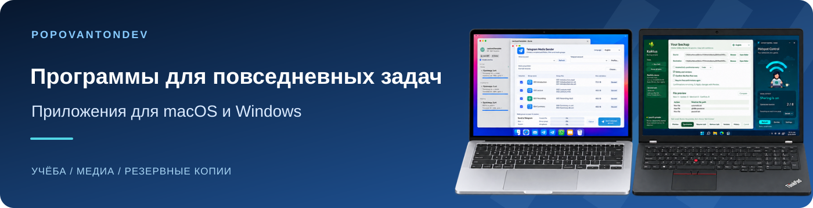

Telegram Media Sender
Выпуск 1.1.2macOS 13+ · Apple Silicon
Отправляет пронумерованные наборы видео, аудио и субтитров в Telegram в выбранном порядке.
Нужны собственный аккаунт Telegram, API ID и API Hash; приложение не нотарифицировано Apple.

Приложения для повседневных задач. Выберите программу, проверьте требования и откройте руководство.
macOS 13+ · Apple Silicon
Отправляет пронумерованные наборы видео, аудио и субтитров в Telegram в выбранном порядке.
Нужны собственный аккаунт Telegram, API ID и API Hash; приложение не нотарифицировано Apple.
macOS 13+ · Apple Silicon
Добавляет локальную озвучку выбранным карточкам Anki и сохраняет отдельный проверенный пакет.
Python 3.9–3.12; интернет для первоначальной установки зависимостей и моделей. Приложение не нотарифицировано Apple.
macOS 15+ · Apple Silicon
Переводит немецкие SRT-субтитры на русский с сохранением таймкодов, очередью и проверкой черновика.
Нужны отдельное подключение и вход во внешний сервис перевода. FFmpeg/ffprobe необязательны для отдельных медиафункций.
macOS 15+ · Apple Silicon
Создаёт синхронизированную русскую озвучку из готовых SRT-субтитров в M4A или WAV.
Отдельно установите Python 3.12 ARM64, FFmpeg, пакеты Silero и модель v5_5_ru.pt. Они не входят в архив. Приложение не нотарифицировано Apple.
macOS 14+ · Apple Silicon
Объединяет видео лекции, озвучку, исходное аудио и субтитры в MP4; также экспортирует аудио.
Обработка локальная; внешний сервис не нужен. Приложение подписано ad-hoc и не нотарифицировано Apple.
Windows · x64
Выполняет одностороннее резервное копирование папок с предварительным просмотром и сохранением предыдущих версий.
Portable-пакет содержит .NET. Установка Python и SDK не нужна. Это предварительный выпуск.
Windows 11 24H2+ · x64
Управляет мобильной точкой доступа Windows, показывает устройства и настройки сети.
Совместимый Wi-Fi-адаптер; политики Windows или организации могут ограничивать операции. .NET входит в пакет.
macOS · Apple Silicon
Запускает согласованные задачи разработки через Codex и сохраняет требования, проверки и прогресс проекта.
Отдельно установите Codex CLI и войдите через аккаунт ChatGPT с доступом к Codex; нужен Git-проект. Приложение не нотарифицировано Apple.
Windows 11 · x64
Помогает следить за лекцией в Teams: локально обобщает субтитры и объясняет выбранный слайд.
Teams Desktop и совместимые драйверы; рекомендуются 32 ГБ RAM, внутренняя SSD и 25 ГБ свободного места для частей, ZIP и распаковки. EXE не подписан; проверка на втором чистом ПК не выполнена.
macOS 13+ · Apple Silicon
Организует учебные материалы по датам, извлекает аудио и готовит порядок публикации для Telegram Media Sender.
Ранняя разработка: доступны исходники, готового установочного пакета нет. Python 3.12; локальная модель и движок для подсказок заголовков устанавливаются отдельно.
macOS 15+ · Apple Silicon
Проверяет поддерживаемые медиассылки и позволяет выбрать разрешённую загрузку или запись трансляции.
Только исходники: распространение готового приложения пока не согласовано по сторонним компонентам. Сохраняйте только материалы, на которые у вас есть право.